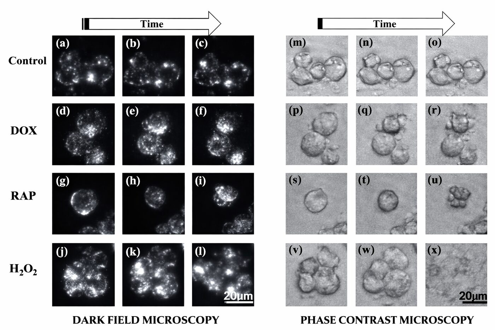

CytoMorpheus: label-free classification of cancer cell death
Telling apoptosis from necrosis usually takes Western blots, flow cytometry or TUNEL, which are slow, destructive and endpoint-only. CytoMorpheus reads the answer from the cells' own optics in time-lapse phase-contrast and dark-field video of drug-treated breast cancer cells, and ships as a desktop app that classifies every cell in a raw recording.
Minor revisionJournal of Biophotonics
